WHAT I BUILD
Technology
with purpose.
From healthcare solutions and financial tools to consumer applications, I love building software that solves real-world problems and makes a meaningful impact.
Computer Science Student | University of South Carolina
Developed an AI-powered clinical intelligence platform that unifies patient record, identifies overlooked medical patterns, and improves care coordination. Integrated Gemini, Snowflake, and ElevenLabs, alongside a simulated wearable monitoring system. Awarded "Best Use of Hardware" and "Best Use of ElevenLabs" at Palmetto Hacks 2026.
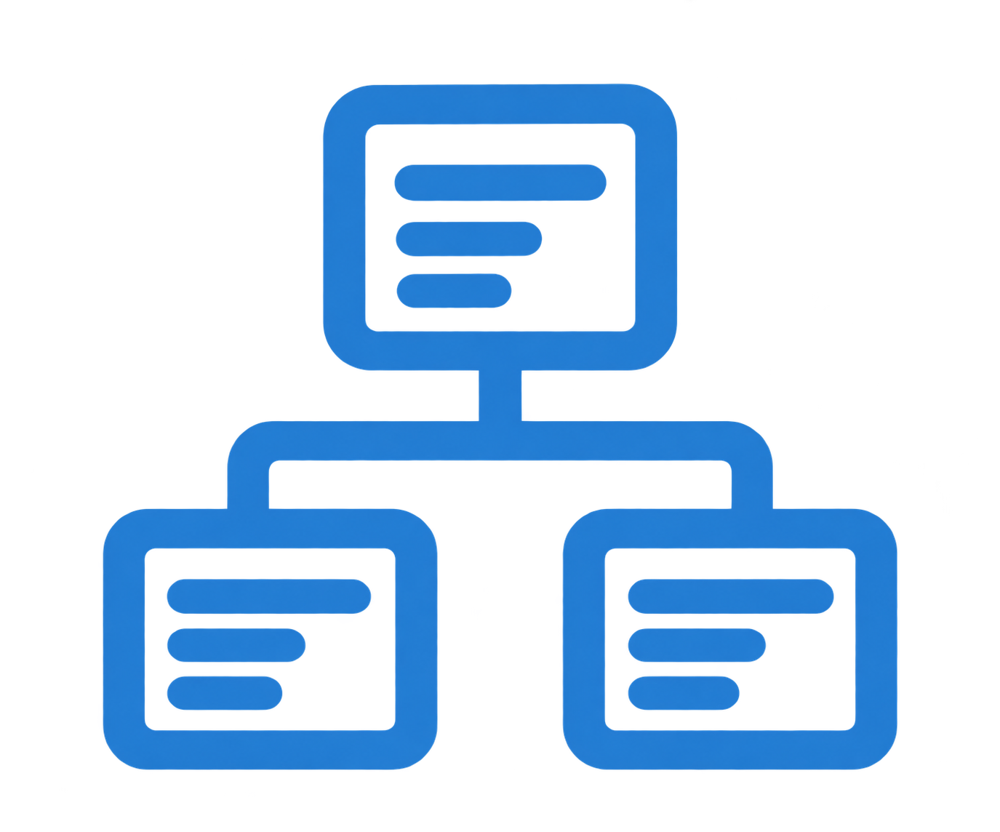
UML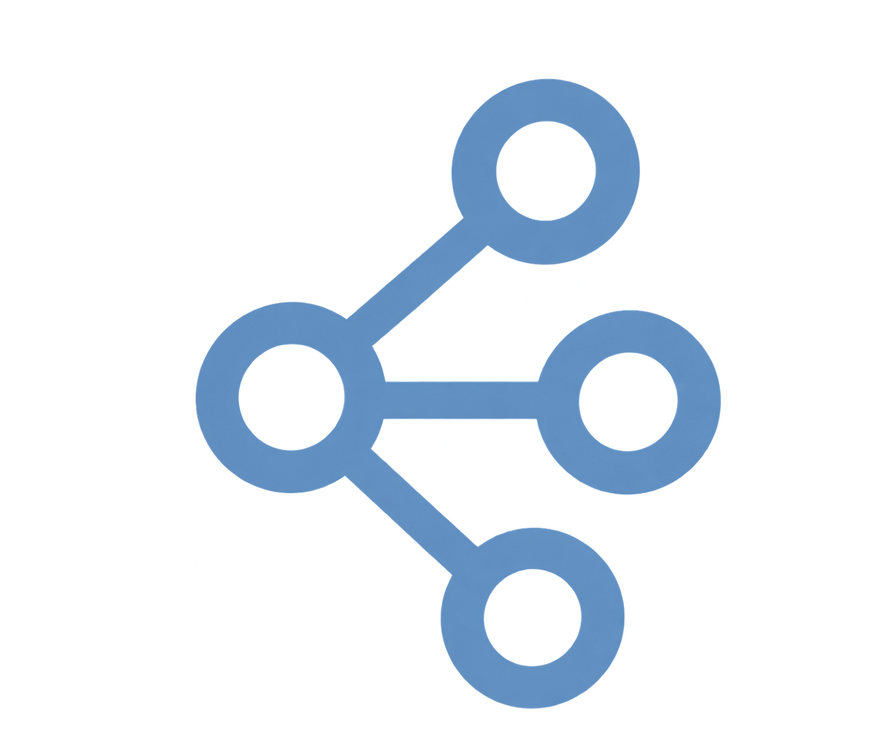
OOPDeveloped an AI-powered financial planning platform that helps users anticipate financial risks, simulate future spending decisions, and manage shared expenses without sacrificing privacy. Integrated Gemini and Backboard for personalized financial guidance, with predictive forecasting and customizable financial sharing between users.
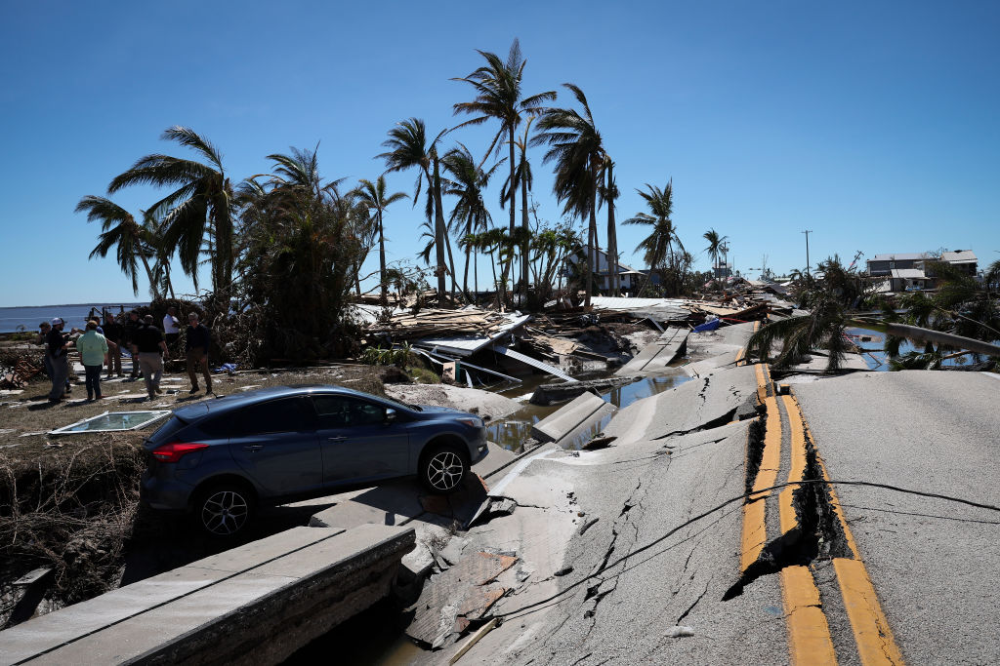
Leading a 5-person team developing a Java-based disaster relief platform that connects survivors, volunteers, and relief coordinators. Responsible for project coordination, requirements engineering, UML system design, and full-stack development.
Collaborating on a 5-developer team to design and build a full-stack website for HOPE Inc., translating client requirements into a maintainable, accessible, and production-ready web experience.
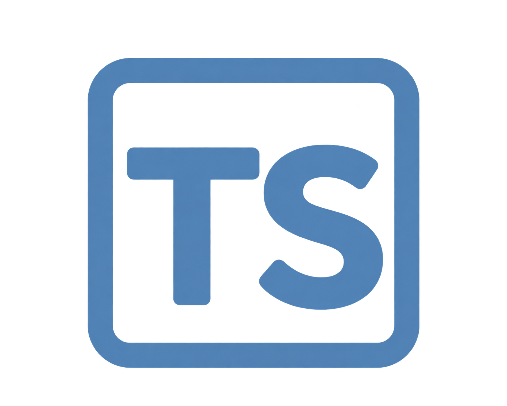
TypeScript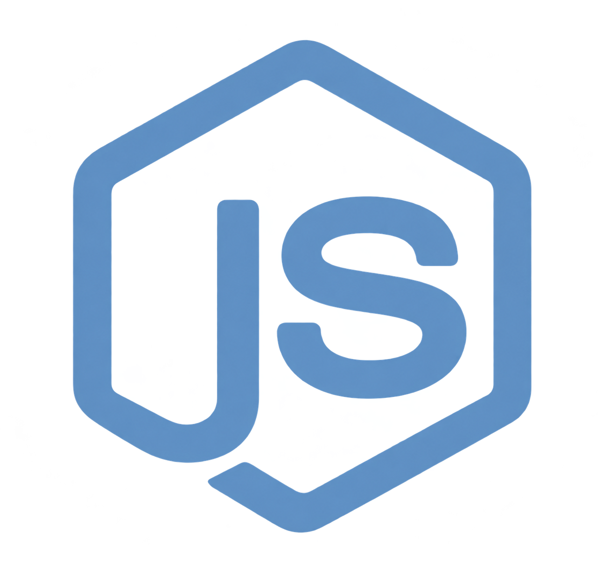
Node.js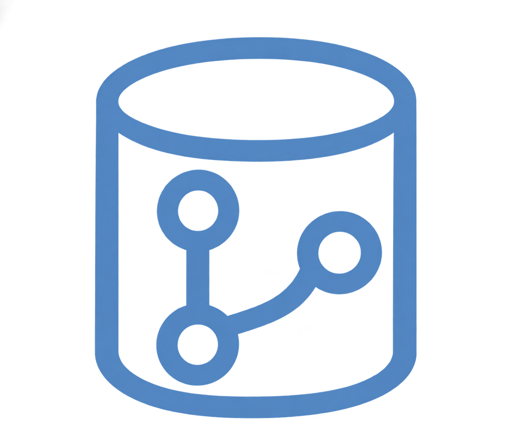
Git/GitHub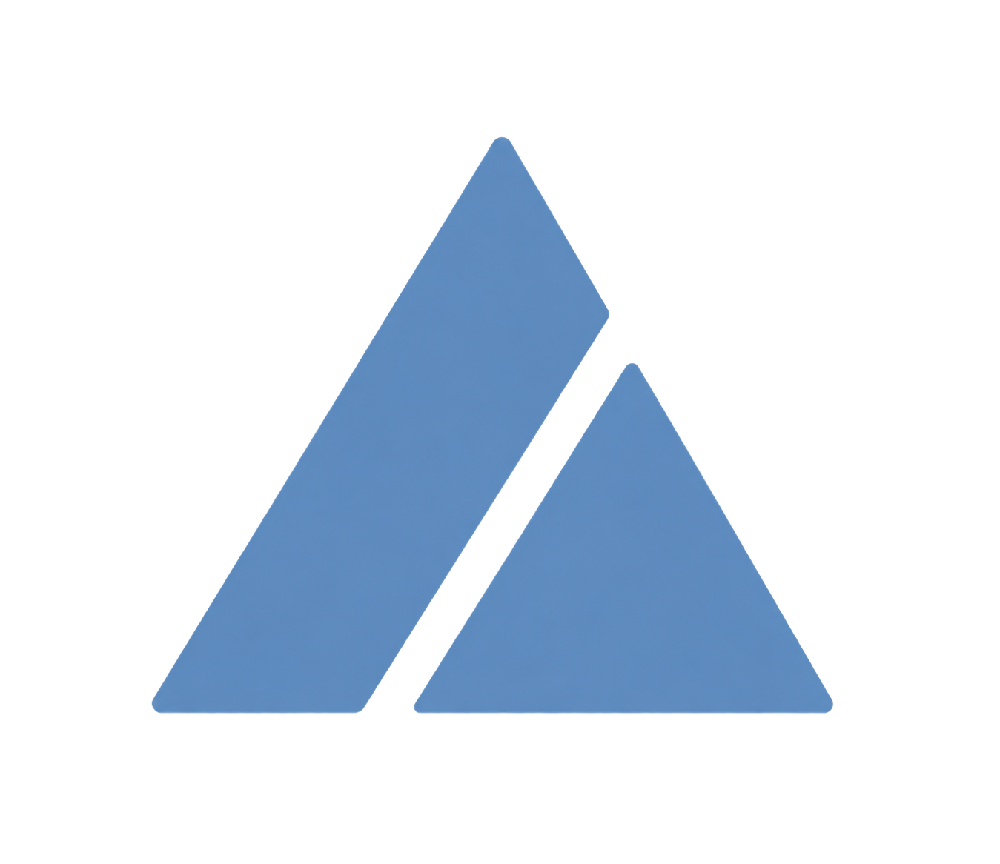
VercelBuilt a stock market system that notifies trading applications of price changes based on subscribed market sectors.
Technologies: Java, Observer Pattern, HashMaps, OOP
View CodeCreated a vocabulary game that changes its behavior and difficulty between first, second, and third-grade states.
Technologies: Java, State Pattern, OOP, State Management
View CodeBuilt a hockey team simulator where different player types dynamically select interchangeable playing behaviors.
Technologies: Java, Strategy Pattern, Inheritance, Polymorphism
View CodeBuilt an ASCII warrior system that dynamically adds swords, shields, and armor by layering decorators onto a character.
Technologies: Java, Decorator Pattern, OOP, File I/O
View CodeCreated a robot simulation that processes a queue of commands to move around a board with obstacles.
Technologies: Java, Queues, Object-Oriented Programming
View CodeDeveloped a program that loads and searches a video game database by title, console, or wildcard search.
Technologies: Java, File I/O, Search Algorithms
View CodeDesigned a shape management program using a binary search tree organized by area.
Technologies: Java, Binary Search Trees, File Processing
View CodeCreated a scheduling program that prioritizes sheep by shortest shearing time and alphabetical order.
Technologies: Java, Priority Queues, Scheduling Algorithms
View CodeFundamentals of software design and development; software implementation strategies; object-oriented design techniques; functional design techniques; design patterns; design process; source control; testing.
Technologies: Java, Observer Pattern, HashMaps, OOP
Problem-solving, algorithmic design, and programming. Three lectures and two laboratory hours per week.
Technologies: Java, Observer Pattern, HashMaps, OOP
Rigorous development of algorithms and computer programs; elementary data structures.
Technologies: Java, Observer Pattern, HashMaps, OOP
An introduction to the field of computing: trends in computing technology, the profession, and careers; subdisciplines in computing; the nature of research and development.
Technologies: Java, Observer Pattern, HashMaps, OOP
Number systems, Boolean algebra, logic design, sequential machines.
Technologies: Java, Observer Pattern, HashMaps, OOP
Computer architecture, components. and organization; memory addressing; Input/Output; instruction sets; interrupts; assembly-language programming.
Technologies: Java, Observer Pattern, HashMaps, OOP
UNIX operating system, user-level system commands, and programming tools. UNIX scripting languages.
Technologies: Java, Observer Pattern, HashMaps, OOP
Propositional and predicate logic; proof techniques; recursion and recurrence relations; sets, combinatorics, and probability; functions, relations, and matrices; algebraic structures.
Technologies: Java, Observer Pattern, HashMaps, OOP
A LITTLE ABOUT ME
I’m a Computer Science student at the University of South Carolina who loves turning complex problems into practical, people-centered technology. From healthcare tools to financial applications, I enjoy taking an idea from requirements and design to a working product, and I’m especially drawn to the intersection of technology, creativity, and social impact.
WHAT I BUILD
From healthcare solutions and financial tools to consumer applications, I love building software that solves real-world problems and makes a meaningful impact.
HOW I WORK
I enjoy understanding problems, translating them into features, and collaborating across design, engineering, and stakeholders to build products people actually use.
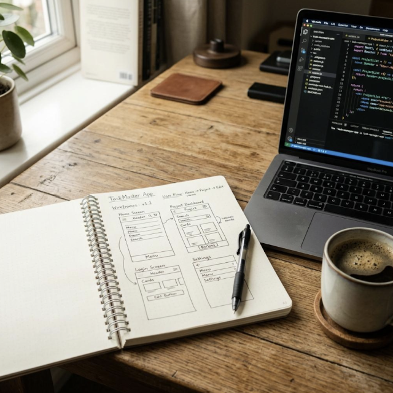
BEYOND THE CLASSROOM
Through hackathons, client work, and personal projects, I’ve had opportunities to explore new technologies, solve meaningful problems, and strengthen both my technical and collaborative skills.
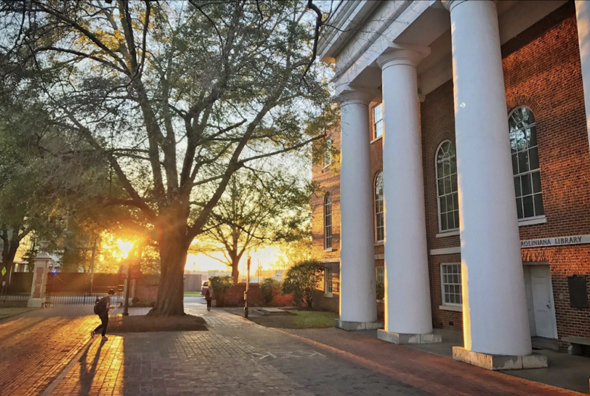
PROFESSIONAL EXPERIENCE
Full Stack Software Engineer
TypeScript, Node.js, Git/GitHub, Vercel
Retail Associate & Content Creator
FEATURED PROJECTS
CLINICAL INTELLIGENCE PLATFORM
A clinical intelligence prototype unifying fragmented medical records, flagging patterns for clinical review, supporting OB anesthesia coordination, and simulating wearable patient monitoring.
PalmettoHacks 2026 · Best Use of Hardware · Best Use of ElevenLabs
COLLABORATIVE FINANCIAL PLANNING
A collaborative financial planning prototype for recurring commitments, financial risks, what-if scenarios, and AI-assisted guidance with control over shared information.
Technica 2026 · Collaborative financial planning prototype
EDUCATION
B.S. Computer Science
Relevant Coursework: Software Engineering, Algorithmic Design, UNIX/Linux, Discrete Structures, Computer Architecture, Design Patterns, Ethics in Computing
SKILLS
Project-specific integrations
GET IN TOUCH
Have a project in mind, an opportunity to share, or just want to say hello?
I’d love to hear from you.
A Java-based disaster relief platform designed to connect survivors requesting aid, volunteers offering skills and resources, and relief coordinators managing response efforts. Currently in the requirements and system-design phase, with implementation to follow.
View GitHub Repo Software Requirements SpecificationA Java-based hurricane relief coordination system designed to connect survivors requesting aid, volunteers offering skills and resources, and elief coordinators managing response efforts. I contribute as both a Full Stack Developer and Project Manager, with my work so far focused on requirements engineering, object-oriented system design, UML modeling, and preparing the architecture for implementation.
Comprehensive project documentation covering stakeholders, personas, system constraints, business use cases, functional and non-functional requirements, system behavior, and competitive analysis.
Highlights: Requirements Engineering, Stakeholder Analysis, UML, Functional & Non-Functional Requirements
View SRS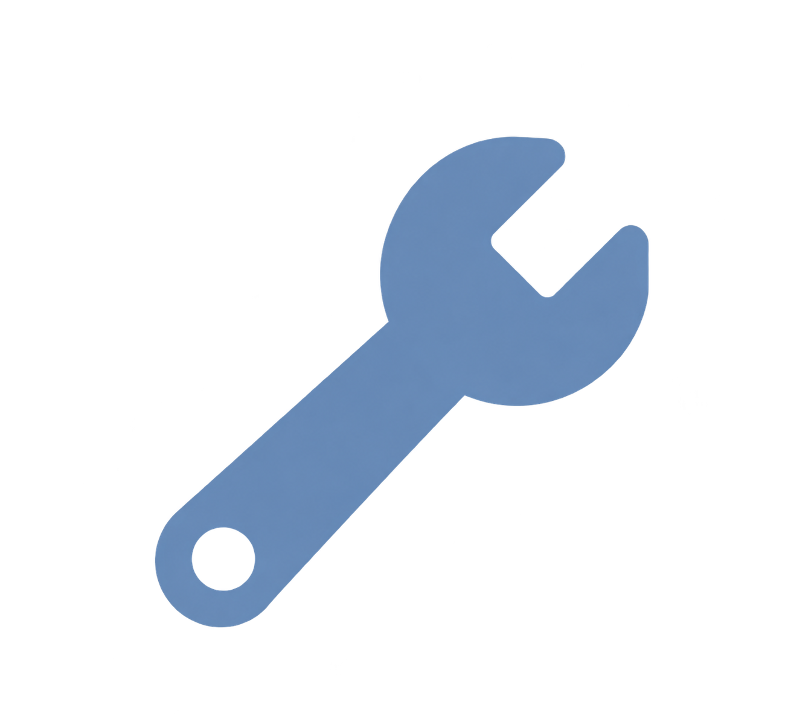
Role Full Stack Developer & PM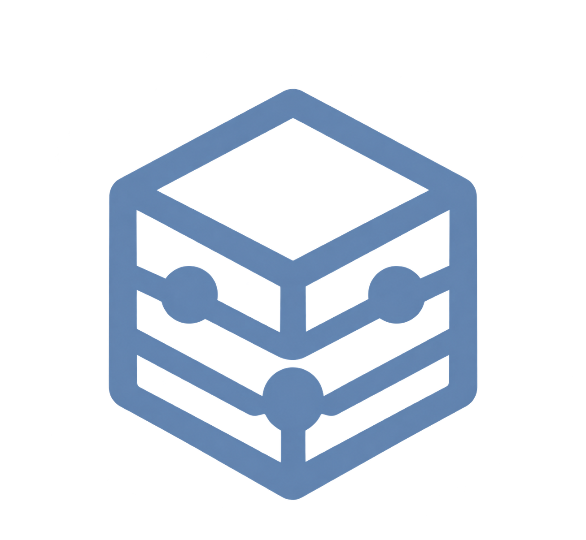
Technologies Java · UML · OOP · RE....
Camellia is an AI-powered healthcare platform designed to connect fragmented patient records, identify potentially overlooked clinical concerns, and improve proactive patient care. Developed during PalmettoHacks 2026, the prototype integrates clinical search, evidence-linked AI analysis, personalized audio briefings, and simulated wearable monitoring.
View GitHub Repo Business Case DocumentCamellia began with conversations with healthcare professionals about fragmented patient records, overlooked clinical information, and delayed communication between care teams. Our team developed a functional prototype to explore how AI and connected devices could support more proactive, informed patient care.
Comprehensive project documentation covering stakeholders, personas, system constraints, business use cases, functional and non-functional requirements, system behavior, and competitive analysis.
Highlights: Requirements Engineering, Stakeholder Analysis, UML, Functional & Non-Functional Requirements
View Business CaseVesta is an AI-powered financial planning platform that helps users anticipate financial risks, simulate spending decisions, and coordinate shared financial responsibilities without sacrificing privacy. Built during Technica 2026, the prototype combines predictive cash-flow forecasting, personalized AI guidance, and relationship-specific financial sharing.
View GitHub Repo Video DemoVesta was developed at Technica 2026 to address a common financial challenge: managing shared expenses without requiring complete financial transparency. Traditional budgeting tools focus on individual spending, but financial decisions often affect roommates, partners, and other people with shared commitments. Our team developed a functional prototype that combines deterministic financial forecasting with Gemini-powered guidance, helping users identify potential shortfalls, explore solutions, and selectively share financial information with others.
Vesta combines a Next.js and TypeScript application with a deterministic financial forecasting engine. Google Gemini provides conversational explanations and financial recommendations, while Backboard supports optional preference memory. The Capital One Nessie API provides access to sandbox banking data. The hackathon demonstration uses consistent fictional financial profiles stored locally in the browser, allowing users to explore shared planning scenarios without affecting real financial accounts.
Highlights: Requirements Engineering, Stakeholder Analysis, UML, Functional & Non-Functional Requirements